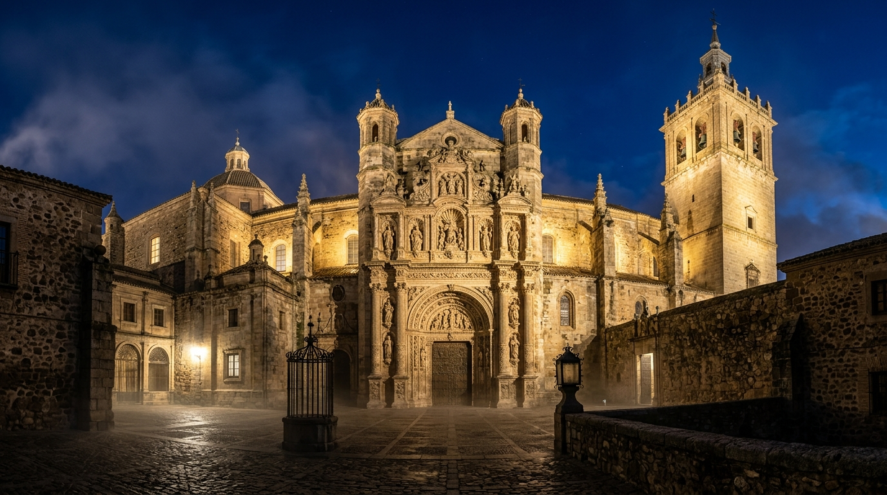
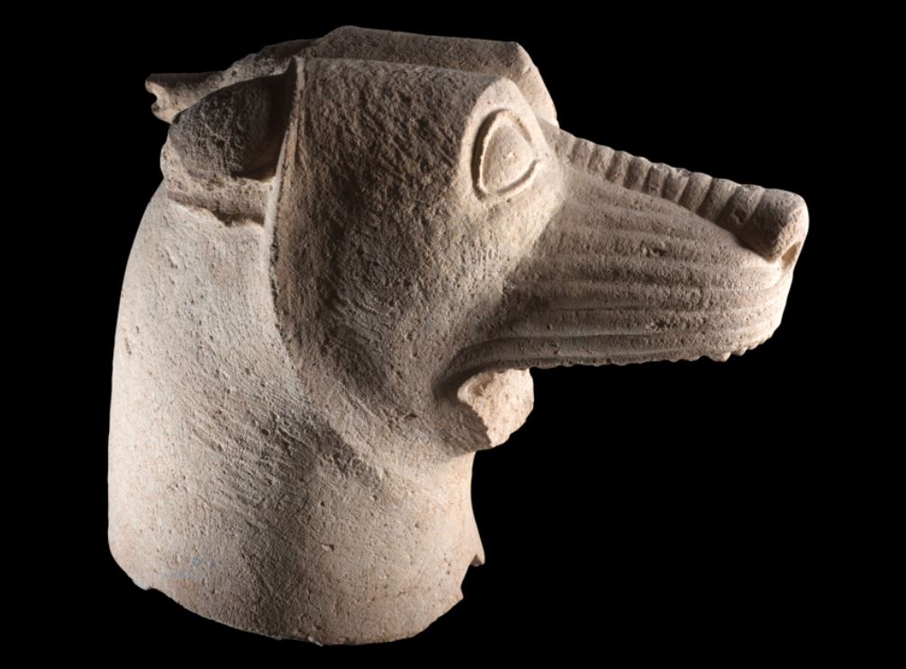
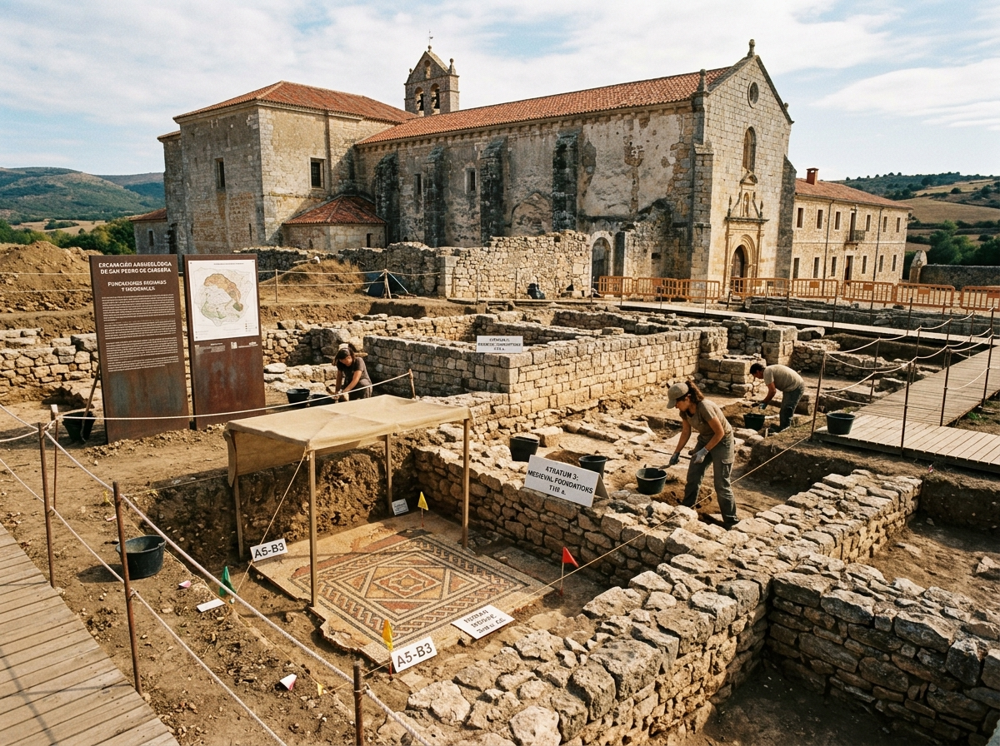
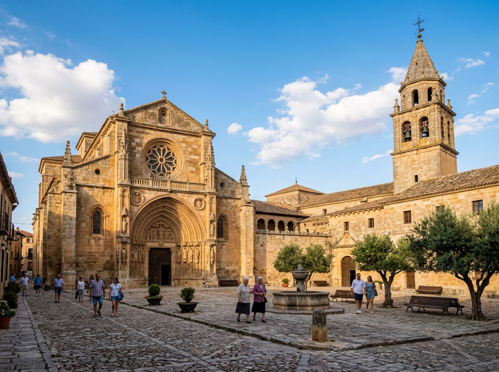
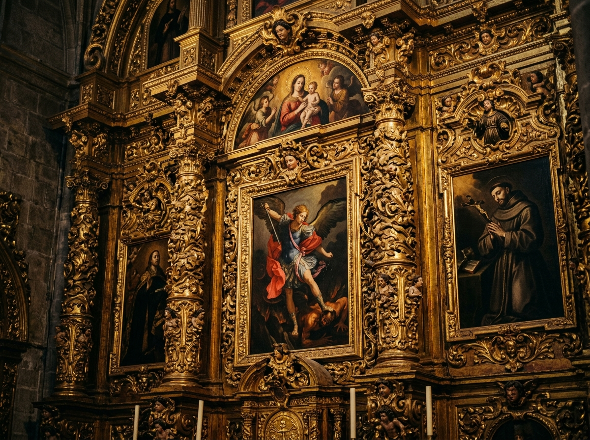

Centro de Interpretación Santuario Ibérico de “El Pajarillo”
Descubre el legendario monumento escultórico ibérico del Héroe y el Lobo, junto a la Iglesia de la Inmaculada Concepción y su legado histórico.

La Cabeza de Lobo
Escultura ibérica en caliza · Siglo IV a.C.
Hitos Cronológicos del Conjunto
Un recorrido por más de dos milenios de historia, desde el santuario heroico oretano del siglo IV a.C. hasta la actualidad.
Historia, Arquitectura y Arte
Un enclave excepcional donde confluyen la espiritualidad íbera del siglo IV a.C. y la arquitectura renacentista y barroca de la Iglesia de la Inmaculada Concepción.
El Santuario Heroico de El Pajarillo (S. IV a.C.)
Ubicado estratégicamente sobre el valle del río Jandulilla, el Santuario Ibérico de El Pajarillo constituye uno de los hallazgos arqueológicos más trascendentales de la protohistoria peninsular. Datado a mediados del siglo IV a.C., el monumento conmemorativo fue concebido como un gran escenario escalonado para la apoteosis o heroización de un príncipe o aristócrata íbero.

Iglesia de la Inmaculada Concepción y Convento
Próxima al entorno patrimonial del santuario, la Iglesia de la Inmaculada Concepción erige su sobria fábrica entre los siglos XVI y XVIII. El templo presenta una estructura de cruz latina con capillas laterales, esbeltos arcos de sillería labrada y una hermosa cúpula sobre pechinas en el crucero.

Tesoro Escultórico y Recursos Artísticos
El corpus escultórico de El Pajarillo, tallado en caliza blanca local por maestros canteros íberos, muestra influencias mediterráneas de época clásica y helenística adaptadas a la cosmovisión autóctona. La expresividad feroz de la Cabeza de Lobo es una obra maestra del arte ibérico.

Puntos de Información y Piezas Clave
Escanea los códigos QR situados en las salas y en el yacimiento para escuchar la audioguía y visualizar los modelos digitales.
Galería Multimedia y Recursos Digitales
Fotografías de alta resolución, reconstrucciones volumétricas, audiovisuales y piezas digitalizadas.
Sala Audiovisual Oficial (Modo Kiosco / Pantalla Completa)
Accede a la interfaz independiente para televisores de 65 pulgadas o tótems táctiles, con selector interactivo para los 4 documentales y reproductor cinematográfico.
Horarios, Tarifas y Localización
Toda la información necesaria para preparar tu experiencia turística y cultural.
🕒 Horarios de Apertura
Horario de Verano (Jun–Sep)
Horario de Invierno (Oct–May)
⚠️ Lunes cerrado por mantenimiento (excepto festivos)
Tarifas de Entrada
Entrada General
Incluye acceso al Centro de Interpretación, templo y audioguía digital.
Entrada Reducida
Jubilados, estudiantes menores de 25 años, grupos >10 personas.
Entrada Gratuita
Menores de 12 años, personas con discapacidad acreditada y empadronados.
🗺️ Cómo llegar
Actividades y Eventos Programados
Conoce los talleres didácticos, visitas teatralizadas y conferencias organizadas por el Ayuntamiento.
Reserva Online para Visitas Guiadas
Plataforma digital integrada para la gestión anticipada de visitas de particulares y grupos.
Visitas Guiadas Oficiales
Acompañado por mediadores culturales y arqueólogos, descubre los secretos del monumento íbero y el esplendor de la Iglesia de la Inmaculada Concepción.
- 🏛️ Acceso exclusivo a zonas restringidas del yacimiento
- 🎧 Dispositivo o audioguía digital multilingüe incluido
- 👥 Grupos reducidos (máximo 25 personas por turno)
- ♿ Recorrido 100% adaptado a personas con movilidad reducida
Contacto e Información Institucional
¿Tienes alguna duda o deseas organizar una visita escolar o de investigación? Escríbenos.
Oficina de Turismo y Patrimonio
-
Teléfono de atención (+34) 953 39 00 10
-
Correo electrónico turismo@elpajarillo.es
-
Gestión Ayuntamiento de Huelma · Concejalía de Patrimonio y Turismo